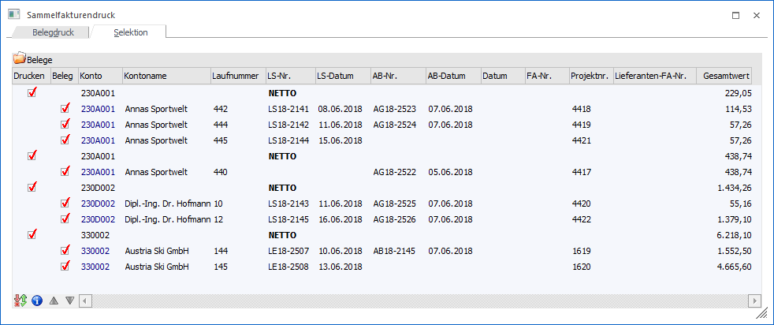
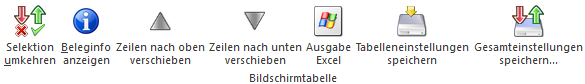

Nachdem im Register "Belegdruck" die Vorselektion durchgeführt wurde, werden bei dem Wechsel in das Register "Selektion" automatisch alle Belege aufgelistet, welche den Selektionskriterien entsprechen. Ob eine Sammelfaktura erstellt werden soll oder nicht (bzw. welche Lieferscheine / Aufträge hierbei berücksichtigt werden sollen) kann mit Hilfe der Tabelle "Belege" manuell entschieden werden.
Hinweis
Die Lieferscheine / Aufträge werden zunächst immer anhand des Hauptkontos zusammengefasst. Innerhalb des Kontos werden dann einzelne Sammelfakturen pro Fremdwährung, Brutto-/Netto-Kennzeichen der Preisliste, Druckstatus des Lieferscheins (* und D getrennt von N) und Summenrabatt gebildet. Es handelt sich hierbei um die sogenannte "Standardgruppierung". Mit Hilfe des Bereichs "Optionen" (siehe Register "Belegdruck") kann die Sortierung und Gruppierung beeinflusst werden.

In der Tabelle werden die entstehenden Sammelfakturen (Option "Drucken" steht zur Verfügung und die Kontonummer wird in schwarzer Schrift dargestellt) und die darin enthaltenen Lieferscheine / Aufträge (Option "Beleg" steht zur Verfügung und alle Daten des Belegs) aufgeführt. Hierbei stehen diverse Einstellungen zur Verfügung bzw. werden folgende Informationen angezeigt.
Ø Drucken
An dieser Stelle kann entschieden werden, ob die Sammelfaktura als solches erstellt werden soll oder nicht.
Ø Beleg
Mit Hilfe dieser Option kann definiert werden, ob der Lieferschein / Auftrag in die Sammelfaktura übergeben werden soll.
Ø Konto / Kontoname
In diesen Spalten werden die Kontonummern und die Namen der Lieferschein- / Auftragsbelege angezeigt.
Ø Laufnummer / LS-Nr. / LS-Datum / AB-Nr. / AB-Datum / Projektnr.
In diesen Spalten werden die Daten der Lieferschein- / Auftragsbelege ausgewiesen.
Hinweis 1
In der Zeile der Sammelfaktura wird in der Spalte "Laufnummer" auf eine ggfs. vorhandene Fremdwährung hingewiesen. Zusätzlich wird in der Spalte "LS-Nr." das Brutto-/Netto-Kennzeichen der Preisliste dargestellt.
Hinweis 2
Werden Aufträge / Lieferscheine eines Kontos zu einer Sammelfaktura zusammengefasst, welche die gleiche Projektnummer im Belegkopf eingetragen haben, so wird diese Projektnummer auch in den Belegkopf der Sammelfaktura übernommen.
Ø Datum
An dieser Stelle kann das Belegdatum für die Sammelfaktura (in der Hauptzeile) hinterlegt werden. Falls kein Datum hinterlegt wird (d.h. das Feld ist / bleibt leer), dann wird bei Anwahl des Buttons "Ok" bzw. der Taste F5 automatisch das aktuelle Tagesdatum (Datum des Einlogvorgangs) als Belegdatum verwendet.
Ø FA-Nr.
Bei Sammelfakturen kann hier die Fakturennummer eingetragen werden (in der Hauptzeile). Ist diese Nummer bereits im System vorhanden, so wird eine entsprechende Meldung angezeigt. Falls keine Nummer hinterlegt wird (d.h. das Feld ist / bleibt leer), dann wird bei Anwahl des Buttons "Ok" bzw. der Taste F5 automatisch der Belegnummernkreis der Belegart als Belegnummer
Ø Lieferanten-FA-Nr.
Bei Sammelfakturen für den Einkauf kann hier die Lieferantenfakturennummer eingetragen werden (in der Hauptzeile). Ist diese Nummer bereits im System vorhanden, so wird eine entsprechende Meldung angezeigt.
Ø Gesamtwert
Die Spalte "Gesamtwert" beinhaltet die Werte der einzelnen Aufträge / Lieferscheine, sowie einen Gesamtwert aller Aufträge / Lieferscheine der Sammelfaktura (pro Konto). Es handelt es sich dabei um die Anzeige des Endbetrags (Bruttowert).
Ø Belegkopfnotiz 1 bis 10 (optionale Spalten)
In diesen Spalten werden die Texte aus den Belegkopfnotizen der Lieferscheine angezeigt.
Tabellenbuttons

Ø Selektion umkehren
Durch Anwahl des Buttons "Selektion umkehren" werden die selektierten Belege (Sammelfakturen und Lieferschiene / Aufträge) deaktiviert und die nicht selektierten Belege aktiviert.
Ø Beleginfo anzeigen
Durch Anklicken des Buttons "Beleginfo anzeigen" wird eine Belegvorschau des ausgewählten Lieferscheins / Auftrags am Bildschirm ausgegeben.
Befindet sich der Fokus auf einer Sammelfaktura, dann wird eine Vorschau auf die entstehende Sammelfaktura am Bildschirm ausgegeben. Hierbei wird auch die gewählte Sammelmethode (siehe Register "Belegdruck") berücksichtigt.
Ø Zeilen nach oben verschieben / Zeile nach unten verschieben
Mittels dieser Buttons kann die Reihenfolge der Lieferscheine / Aufträge innerhalb einer Sammelfaktura verändert werden.
Hinweis
Die Reihenfolge kann auch durch das Sortieren einer Spalte angepasst werden.
Ø Ausgabe Excel
Durch Anwahl des Buttons "Ausgabe Excel" wird der Inhalt der Tabelle an Microsoft Excel übergeben.
Ø Tabelleneinstellungen speichern
Die Spalten einer Tabelle können grundsätzlich an beliebige Positionen verschoben, bzw. in der Breite entsprechend angepasst werden. Durch Anwahl des Buttons "Tabelleneinstellungen speichern" werden die Einstellungen benutzerspezifisch gespeichert und bei dem nächsten Aufruf des Programmpunktes wieder vorgeschlagen.
Ø Gesamteinstellungen speichern
Im Gegensatz zu "Tabelleneinstellungen speichern" können mit "Gesamteinstellungen speichern" mehrere Tabellenaufbauten gespeichert und nach Wunsch geladen werden. Zusätzlich werden Sonderfunktionen der Tabelle (z.B. "Spalte gruppieren") ebenfalls bei der Speicherung bedacht.